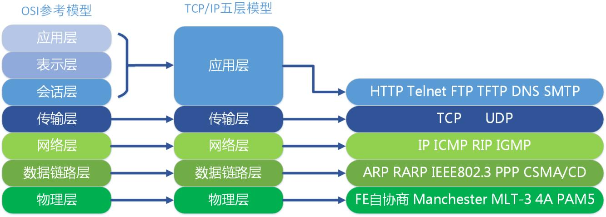
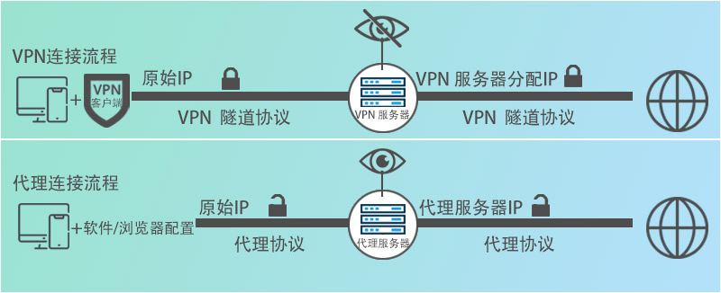

代理与vpn
本文最后更新于：11 分钟前
先了解下 OSI 7层网络模型
每层具有的协议如下：
| OSI对应的层 | 功能 | TCP/IP对应的协议 | 设备 |
|---|---|---|---|
| 应用层 | 文件传输，电子邮件，文件服务，虚拟终端 | TFTP，HTTP，SNMP，FTP，SMTP，DNS，Telnet | / |
| 表示层 | 数据格式化，代码转换，数据加密 | / | / |
| 会话层 | 建立管理和维护会话 | / | / |
| 传输层 | 建立管理维护端到端的连接 | TCP，UDP | 四层交换机和四层路由 |
| 网络层 | IP选址及路由 | IP，ICMP，RIP，OSPF，BGP，IGMP | 三层交换机和路由 |
| 数据链路层 | 传输有地址的帧以及错误检测功能 | ARP，RARP，MTU，SLIP，CSLIP，PPP | 网桥、交换机、网卡 |
| 物理层 | 以二进制数据形式在物理媒体上传输数据 | 中继器、集线器、双绞线 |
什么是代理？
代理（proxy）也称网络代理，是一种特殊的网络服务，允许一个终端（一般为客户端）通过这个服务与另外一个终端（一般为服务器）进行非直接的连接
提供代理服务的网络终端称为代理服务器（proxy server）
一个完整的代理请求过程为：客户端首先根据代理服务器所使用的代理协议，与代理服务器创建连接，接着按照协议请求对目标服务器创建连接、或者获得目标服务器的指定资源
常用代理协议
常用的代理协议有 Socks 和 HTTP(HTTPS)
Socks
SOCKS 是 SOCKet Secure 的缩写，根据 OSI 模型，SOCKS 是会话层的协议，位于表示层与传输层之间
SOCKS 代理协议只是简单地传递数据包，而不必关心是何种应用协议，所以速度比较快。SOCKS代理协议是1990年开发的，
SOCKS 协议具有 3 个常用版本：
- SOCKS4 - 只支持 TCP 应用
- SOCKS4a - 是 SOCKS4 协议的简单扩展，允许客户端对无法解析域名的目的主机进行访问
- SOCKS5 - 比 SOCKS4a 多了验证、IPv6、UDP支持
这里要理解一个知识点，SOCKS 是会话层的协议，位于传输层之上，所以 SOCKS 协议可以转发 TCP/UDP 协议的数据包。而传输层之下的数据包，如网络层的 ICMP 数据包就无法被 SOCKS 协议处理。实际中我们可以尝试挂上 SOCKS 代理 ping 一下 google 测试一下
HTTP
HTTP 协议这里就不多说了，使用 HTTP 协议的代理服务也称为 HTTP 代理，对应的还有 HTTPS 代理
什么是VPN？
虚拟专用网络（英语：virtual private network，缩写：VPN）是指在公用网络上建立专用网络，进行加密通讯
VPN 会涉及隧道协议和加密技术，很多时候会看到人们统称为 VPN 协议
VPN 技术最早出现在20世纪90年代，那时的通信数据都是不加密的广播传输（要知道我们使用互联网时，发出的每个请求都会经过数个路由器，所以从这个角度上讲，我们的通信并不安全），像银行这种单位对隐私十分看中，想要保证隐私的通信往往需要铺设昂贵的专线，VPN 技术就是在这种情况下出现的
可以看出 VPN 最早的目的是在公用网络上搭建一条虚拟专用的网络隧道，并对其中的通信数据做了加密。然而人们却发现了一个意外的收获，比如客户利用 VPN 隧道成功和银行的服务器通信，这时他会发现银行位于内部网络其他的终端也能访问，位于国内的我们也便经常利用这一项技术完成翻墙的操作
常用的 VPN 协议
下面介绍一些常用的 VPN 协议
- PPTP - Point to Point Tunneling Protocol，点对点隧道协议，初代 VPN 协议，于 1996年发布，该协议将PPP数据包封装在IP数据包内通过IP网络 (如Internet或Intranet) 进行传送
- L2TP/IPsec - L2TP 又叫第2层隧道协议，本身不具备加密功能，往往需要和 IPsec 协议配置实现加密传输，所以该方法速度会偏慢
- OpenVPN - 一种开源、跨平台、也是目前最常用的 VPN 加密协议
- Shadowsocks - 是一种免费且开源的加密代理/VPN 协议。它是一款基于 Socks5 的代理协议
代理和VPN的区别
简单来说，VPN 和代理是两种常用的上网方式，这两者的基本功能都十分适合我们这种职业，甚至在我们的需求面前，两者的功能相差并不大，以至于很多人把这两者搞混淆。我们需要从以下几个方面去弄懂代理和VPN
- 匿名性
代理和VPN的操作非常相似。它们都位于请求的中间，起到隐藏 IP 的效果
VPN 和代理两者的工作流程如下：
- 隐私性
我们通常使用的代理来自于供应商，其中代理服务器可能会记录我们的上网日志，VPN 服务商也可能会记录日志。最好的选择还是自己搭建代理服务器会VPN服务器
- 加密
毫无疑问 VPN 协议加密做的更好
- 协议
两者最大的区别首先就是使用的协议：
| 协议名称 | |
|---|---|
| VPN | OpvenVPN、IPsec、IKEv2、PPTP、L2TP、WireGuard等 |
| 代理 | HTTP、HTTPS、SOCKS、FTP、RTSP等 |
VPN 协议大多是作用在 OSI 的第二层和第三层之间，所以使用 VPN 时，几乎能转发所有的流量
参考：
OSI 七层网络模型：https://www.cxybb.com/article/uonele/106735758
https://laravelacademy.org/post/9336
代理（服务器）是什么：https://pandavpnpro.com/blog/zh-cn/what-is-proxy
VPN 和代理的区别的有哪些：https://pandavpnpro.com/blog/zh-cn/vpn-vs-proxy-difference
本博客所有文章除特别声明外，均采用 CC BY-SA 4.0 协议 ，转载请注明出处！